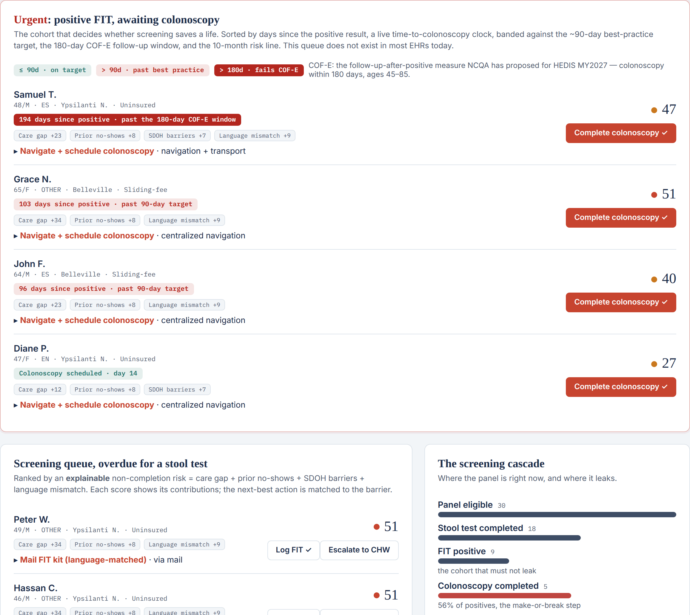

The Prevention Adoption Gap.
America’s preventive services work. Completion is what fails. The Prevention Adoption Initiative is a proposed toolkit to close that gap in safety-net settings, beginning with a colorectal-cancer screening pilot.
- Problem
- Adults 45–75 up to date on screening63.5%National target 72.8% (marked). FQHC average ~45%.Positive stool tests that get the colonoscopy24–75%A reported range, not a settled figure. NCQA has proposed a HEDIS measure to close it.
Screening fails twice, and the second failure is the one that costs a life. The services work; completion is what fails.
- Solution
- Never screened→A mailed kit and reminders, aimed first at whoever is least likely to finish.Positive test, no colonoscopy→Navigation, and time-to-colonoscopy tracked until the result is closed.
One proposed disease-agnostic completion engine covers both gaps, on an explainable, fairness-audited dashboard. The weekly loop it runs is set out under “How it works.”
- Evidence
Median increase Mailed FIT outreach +16pp Reminders +15pp Patient navigation +14pp All three already carry a Community Preventive Services Task Force recommendation. Nothing here needs a new intervention invented. One honest limitation: real-world gains depend on implementation fidelity, which this design exists to protect.
- Cost
Direct With overhead Per patient screened $54.83 $72.90 Per additional patient screened $67.05 $91.47 Mailed-FIT outreach, Pignone et al., JGIM 2021. The second row assumes 5% of the panel would have been screened anyway; where background screening is near zero the two rows are the same number. Funding is discussed with each partner.
- The ask
- One clinic to run a pre-registered 12-month pilot; partners to scale it.
Improve a measure you already report
Move a system measure with a fidelity-first loop
Move the measure you're already paid on
Co-design a publishable pilot
Fund a cost-effective, scalable model
Bring a measurable completion model to your members
Raise entry-test → package conversion
Strengthen a program that already exists
Care that reaches you, honestly
- 01FindEveryone overdue, plus every positive test still waiting on a colonoscopy.
- 02RankScore who is least likely to finish, and show the reasons behind each score.
- 03ActMatch the action to the barrier: a mailed kit, a reminder, navigation, or a community health worker.
- 04CloseRecord completion and time-to-colonoscopy, and watch the equity gap so outreach never widens it.
Recommended, reimbursed, and still not completed.
Only about 8% of U.S. adults 35 and older received all fifteen high-priority clinical preventive services measured (Borsky et al., Health Affairs, 2018). Colorectal-cancer screening is one measure inside that failure, and it is the one this pilot takes on.
Share of the eligible population up to date with colorectal-cancer screening.
Vertical marks show the Healthy People 2030 target of 72.8% (objective C-07). Bars run on a 0–100% axis. Read the denominators. The Healthy People objective is defined for ages 50–75; HRSA UDS has reported ages 45–75 since CY2023, so the health-center bars and the target are close but not identical measures.
Share of people with a positive stool test who complete the diagnostic colonoscopy. Reported figures vary widely by setting.
Different denominator. Panel A is measured on everyone eligible for screening. Panel B is measured only on those who screen positive. The two are not stages of one funnel and the percentages should not be multiplied together.
SOURCES: Borsky et al., Health Affairs 2018; Healthy People 2030 objective C-07 (2023 baseline 63.5%, target 72.8%); HRSA Uniform Data System CY2025 national and Michigan state performance indicators, accessed 3 August 2026. UDS changed its screening denominator from ages 50–75 to 45–75 beginning CY2023, so UDS years before and after that break are not directly comparable.
Every lever is already evidence-based. The hard part is execution.
| Lever | Median increase in CRC screening | Pillar |
|---|---|---|
| Reducing structural barriers (mailed at-home FIT) | +16.1 pp | Service redesign |
| Provider reminder / recall systems | +15.3 pp | Data infrastructure |
| Patient navigation | +13.6 pp | Implementation |
| Client (patient) reminders | +11.5 pp standalone, +10.9 pp incremental | Data infrastructure |
The coral bar is the full spread of site results, not a distribution; individual clinic values are not published. Every one of these clinics ran the same program. What separates the two ends is how faithfully each one executed it.
SOURCES: CDC Community Preventive Services Task Force, colorectal-cancer screening findings, accessed 3 August 2026 (all figures are median effect sizes); Coronado et al., STOP CRC cluster-RCT (JAMA Internal Medicine, 2018).
Not another intervention, the execution layer for the ones you already run.
Designed around finishing
The test returned, the positive followed up, the loop closed. Follow-up after a positive result, the measure NCQA has proposed for HEDIS MY2027 (COF-E: colonoscopy within 180 days of a positive test), is this initiative’s core object, not an afterthought.
Execution quality decides outcomes
STOP CRC’s range, −7 to +18 points on the same intervention, shows fidelity is where results leak. The dashboard tracks whether each step actually happened, not just the end number.
Runs inside what exists
Inside existing staffing, EHRs, and national programs. No parallel system, no new burden: the completed path becomes the easiest path.
Six pillars, one completion loop.
- 01Find
Pull everyone overdue from the registry, plus every positive test still waiting on a colonoscopy.
- 02Rank
Score who is least likely to finish without help, and show the reasons behind each score.
- 03Act
Match the action to the barrier: a mailed at-home test, a reminder in the patient’s language, help with scheduling, or a community health worker.
- 04Close
Record completion and time to colonoscopy, and watch the equity gap so outreach does not widen it.
Then it runs again the following week
Each pillar carries one part of the loop.
PILLAR 01 · ActService redesign & friction reduction
Make the completed path the easiest one, defaults, mailed at-home FIT, one-click scheduling, barrier removal.
PILLAR 02 · FindInteroperable data infrastructure
Registries and dashboards that surface who is overdue and where patients drop out, FHIR / TEFCA-ready integration, automated reminders, and CHW escalation on one record.
PILLAR 03 · RankPredictive AI, explainable by design
A proposed model layer that flags who is most likely to fall out of the loop and prioritizes outreach accordingly, explainable and fairness-audited, human-in-the-loop, never a black box.
PILLAR 04 · ActAgentic & conversational outreach
Generative-AI patient navigation: multilingual, two-way reminders over SMS and messaging that shepherd each patient through scheduling and at-home testing, culturally tailored, and always handing off to a human when it matters.
PILLAR 05 · CloseAlgorithmic equity & governance
Continuous bias and fairness auditing, SDOH-aware targeting, and privacy-by-design under a human review board, so the model narrows disparities in who completes care rather than widening them.
PILLAR 06 · All fourImplementation enablement
Training so a site can run and sustain the toolkit itself, the pillar the evidence says matters most.
The registry a site would work each week.

Interactive · open the demo →If you have one minute
- Read the top row. One patient is 194 days past a positive stool test, already outside the 180-day window of the follow-up measure NCQA has proposed. Most EHRs have no screen that shows you this.
- Press Complete colonoscopy on that patient. The follow-up rate, the median days-to-colonoscopy and the equity gap all move together. That is the loop a site would work.
- Open Equity, follow-up by language. That gap is the number a QI committee is graded on, and the one outreach automation most often makes worse.
Static and synthetic. No real patients, no PHI, no EHR connection, and nothing is deployed. The file a site would send is specified field by field, all 19 columns, with a sample you can download.
A proposed pilot, end to end.
The pilot would target a clinic below the UDS colorectal-cancer benchmark, with a FHIR-capable EHR, an existing outreach function, and a quality-improvement sponsor. The route to that clinic runs through the Michigan Primary Care Association and EMU faculty. Evaluation would follow the RE-AIM framework against the site’s own baseline.
- Step 01MOU
One host FQHC plus an academic and IRB home. No entity required.
- Step 02Baseline
Pull the site’s own screening and follow-up data, then pre-register the target and the protocol before anything runs.
- Step 03Install
Embed the completion loop in existing staffing and the EHR. The fidelity dashboard tracks whether each step actually happens.
- Step 04 · 12 monthsEvaluate
RE-AIM against the site’s own baseline, a comparison clinic where feasible, and guaranteed diagnostic follow-up after a positive test.
- Step 05Publish
Protocol and results in the open, including the parts that did not work.
- Step 06Second site
Package the toolkit, seek peer review, and replicate at a second clinic.
- Step 07Network
Distribute through PCA, HCCN and NTTAP networks and professional bodies: NACCHO, ASTHO, APHA, SOPHE.
Delivers care
The site’s own clinical staff keep doing their jobs; the loop removes friction around them, not on top of them.
Implementation lead
Fidelity, training, measurement, and coordination, the discipline that makes the interventions land as designed.
Owns the evaluation
Research standing, IRB coverage, and the pre-registered protocol, rigor held independently of the implementer.
DATA GOVERNANCE: the host site remains the covered entity; patient data stays in the site's environment or a BAA-covered tenant; HSREP operates under a signed BAA with minimum-necessary access.
Built for the people who own preventive-care completion.
Improve a measure you already report
Raise a UDS or HEDIS measure inside your existing staffing, with your clinical team in the lead.
Fund a cost-effective, scalable model
A published mailed-FIT benchmark of $54.83 direct per patient screened (Pignone 2021), equity-stratified, with a route from one site to a network.
Co-design a publishable pilot
A pre-registered stepped-wedge / RE-AIM evaluation, protocol published before results, co-authorship on the table.
Care that reaches you, honestly
Built so reminders and navigation reach patients with unstable contact or low portal access instead of skipping past them.
One engine, many diseases, and not only in the U.S.
The loop does not care which disease it runs on. The same registry-plus-outreach mechanism applies to cervical and breast screening, hypertension, diabetes follow-up, and immunizations. It travels across health systems too. The table below sets the U.S. demonstration beside the health system the founder knows best.
Where the work begins abroad is where the founder already has standing and screening-service experience. That is a reason to start there, not evidence that it will work there. The current work is the U.S. demonstration above.
Different partners, different value, same completion engine.
Where completion is also good business
For a private network, a natural first partner, higher completion compounds commercially: more screenings lead to more diagnostics, more appropriate downstream care, stronger patient retention, and better-positioned corporate-wellness and payer contracts. The initiative raises the completion rate the business is already working to grow, advancing patient health and commercial performance together.
Strengthening a program that already exists
For the DGHS Non-Communicable Disease Control Programme (NCDC), the national cervical & breast screening leadership, and the Community Clinic Health Support Trust, the completion loop embeds into the existing network of roughly 14,000 community clinics as of 2019 and the national electronic registry, closing the uptake and follow-up gaps the program’s own evaluation identifies, piloted in a few upazilas and aligned to the national strategy.
Reach, rigor, and credibility
BRAC and Marie Stopes bring community reach; icddr,b, BSMMU, and NICRH bring evaluation and clinical authority. Together, these partners can turn a pilot into publishable, scalable evidence, and open pathways to both government and donor funding.
The work already done.
Screening growth, operationally
At a private healthcare network in Bangladesh, led the growth strategy that raised preventive screening utilization 34%, this exact class of metric, moved inside a real delivery system.
A published evidence base
An MPH capstone (Eastern Michigan University) examining health-system fragility and prevention across the U.S. and Bangladesh, published publicly as Season 1’s nine-article argument.
Attention on a $0 budget
Season 1’s advocacy campaign drew 57,274 verified impressions across two countries with no ad spend, 5.7× the target. Attention can be mobilized without a grant.
The engine, before the ask
The completion loop, six pillars, evaluation approach, dashboard demo, and both country briefs are already designed and public, execution discipline shown before anyone is asked to commit.
This is an HSREP initiative in development. All designs are illustrative, all language is future-tense, and no patient data has been collected. Operational materials will be reviewed by counsel before any launch.
I’m seeking the institutional home to lead this pilot, a partnership, a funded engagement, or a role with a health center, a payer, or a research group that owns this problem.
A ready-to-run engine
The completion toolkit (registry logic, friction-removal playbook, an explainable AI layer, and the evaluation framework) designed and documented. You start from a plan, not a blank page.
Public-health & growth strategy
MPH, CHES®, and 16+ years turning complex systems into measurable results, with screening-service and safety-net experience. I lead the pilot end to end.
A fundable demonstration
A pre-registered single-site pilot with internal controls and a named sustainability path, a result you can publish, scale, or take to funders.
The data spec is the whole ask of your IT team: 19 de-identified columns in one nightly file. No name, MRN, date of birth, address or phone leaves your system. Field-by-field notes are in the demo.